정보처리기사 (2020-06-06 기출문제)
1과목: 소프트웨어 설계
1. 검토회의 전에 요구사항 명세서를 미리 배포하여 사전 검토한 후 짧은 검토 회의를 통해 오류를 조기에 검출하는데 목적을 두는 요구 사항 검토 방법은?
- 빌드 검증
- 동료 검토
- 워크 스루
- 개발자 검토
(정답률: 82%)

2. 코드 설계에서 일정한 일련번호를 부여하는 방식의 코드는?
- 연상 코드
- 블록 코드
- 순차 코드
- 표의 숫자 코드
(정답률: 85%)
3. 객체지향 프로그램에서 데이터를 추상화하는 단위는?
- 메소드
- 클래스
- 상속성
- 메시지
(정답률: 83%)
4. 데이터 흐름도(DFD)의 구성요소에 포함되지 않는 것은?
- process
- data flow
- data store
- data dictionary
(정답률: 83%)
5. 소프트웨어 설계시 구축된 플랫폼의 성능특성 분석에 사용되는 측정 항목이 아닌 것은?
- 응답시간(Response Time)
- 가용성(Availability)
- 사용률(Utilization)
- 서버 튜닝(Server Tuning)
(정답률: 90%)
6. UML 확장 모델에서 스테레오 타입 객체를 표현할 때 사용하는 기호로 맞는 것은?
- 《 》
- (( ))
- {{ }}
- [[ ]]
(정답률: 82%)
7. GoF(Gang of Four)의 디자인 패턴에서 행위 패턴에 속하는 것은?
- Builder
- Visitor
- Prototype
- Bridge
(정답률: 65%)
8. 자료 사전에서 자료의 생략을 의미하는 기호는?
- { }
- **
- =
- ( )
(정답률: 79%)
9. 트랜잭션이 올바르게 처리되고 있는지 데이터를 감시하고 제어하는 미들웨어는?
- RPC
- ORB
- TP monitor
- HUB
(정답률: 83%)
10. UI 설계 원칙에서 누구나 쉽게 이해하고 사용할 수 있어야 한다는 것은?
- 유효성
- 직관성
- 무결성
- 유연성
(정답률: 91%)
11. XP(eXtreme Programming)의 5가지 가치로 거리가 먼 것은?
- 용기
- 의사소통
- 정형분석
- 피드백
(정답률: 81%)
12. UML 모델에서 사용하는 Structural Diagram 에 속하지 않은 것은?
- Class Diagram
- Object Diagram
- Component Diagram
- Activity Diagram
(정답률: 76%)
13. 소프트웨어 개발 방법 중 요구사항 분석(requirements annalysis)과 거리가 먼 것은?
- 비용과 일정에 대한 제약설정
- 타당성 조사
- 요구사항 정의 문서화
- 설계 명세서 작성
(정답률: 65%)
14. 럼바우(Rumbaugh)의 객체지향 분석 절차를 가장 바르게 나열한 것은?
- 객체 모형→동적 모형→기능 모형
- 객체 모형→기능 모형→동적 모형
- 기능 모형→동적 모형→객체 모형
- 기능 모형→객체 모형→동적 모형
(정답률: 86%)
15. 공통 모듈에 대한 명세 기법 중 해당 기능에 대해 일관되게 이해하고 한 가지로 해석될 수 있도록 작성하는 원칙은?
- 상호작용성
- 명확성
- 독립성
- 내용성
(정답률: 86%)
16. 객체지향 기법에서 클래스들 사이의 ‘부분-전체(part-whole)' 관계 또는 ’부분(is-a-part-of)'의 관계로 설명되는 연관성을 나타내는 용어는?
- 일반화
- 추상화
- 캡슐화
- 집단화
(정답률: 63%)
17. CASE가 갖고 있는 주요 기능이 아닌 것은?
- 그래픽 지원
- 소프트웨어 생명주기 전 단계의 연결
- 언어번역
- 다양한 소프트웨어 개발 모형 지원
(정답률: 84%)
18. DBMS 분석시 고려사항으로 거리가 먼 것은?
- 가용성
- 성능
- 네트워크 구성도
- 상호 호환성
(정답률: 83%)
19. HIPO(Hierarchy Input Process Output)에 대한 설명으로 거리가 먼 것은?
- 상향식 소프트웨어 개발을 위한 문서화 도구이다.
- HIPO 차트 종류에는 가시적 도표, 총체적 도표, 세부적 도표가 있다.
- 기능과 자료의 의존 관계를 동시에 표현할 수 있다.
- 보기 쉽고 이해하기 쉽다.
(정답률: 78%)
20. 객체지향 분석 방법론 중 E-R 다이어그램을 사용하여 객체의 행위를 모델링하며, 객체식별, 구조 식별, 주체 정의, 속성 및 관계 정의, 서비스 정의 등의 과정으로 구성되는 것은?
- Coad와 Yourdon 방법
- Booch 방법
- Jacobson 방법
- Wirfs-Brocks 방법
(정답률: 79%)
2과목: 소프트웨어 개발
21. 정렬된 N개의 데이터를 처리하는데 O(Nlog2N)의 시간이 소요되는 정렬 알고리즘은?
- 선택정렬
- 삽입정렬
- 버블정렬
- 합병정렬
(정답률: 69%)
22. White Box Testing 에 대한 설명으로 옳지 않은 것은?
- Base Path Testing, Boundary Value Analysis가 대표적인 기법이다.
- Source Code 의 모든 문장을 한번 이상 수행함으로서 진행된다.
- 모듈 안의 작동을 직접 관찰 할 수 있다.
- 산출물의 각 기능별로 적절한 프로그램의 제어구조에 따라 선택, 반복 등의 부분들을 수행함으로써 논리적 경로를 점검한다.
(정답률: 67%)
23. 소프트웨어 품질 측정을 위해 개발자 관점에서 고려해야 할 항목으로 거리가 먼 것은?
- 정확성
- 무결성
- 사용성
- 간결성
(정답률: 63%)
24. 인터페이스 구현 검증도구 중 아래에서 설명하는 것은?
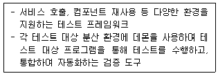
- xUnit
- STAF
- FitNesse
- RubyNode
(정답률: 64%)
25. EAI(Enterprise Application Integration)의 구축 유형으로 옳지 않은 것은?
- Point-to-Point
- Hub&Spoke
- Message Bus
- Tree
(정답률: 73%)
26. 다음 트리를 전위 순회(preorder traversal)한 결과는?
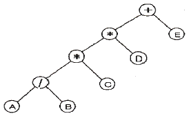
- +*AB/*CDE
- AB/C*D*E+
- A/B*C*D+E
- +**/ABCDE
(정답률: 79%)
27. 인터페이스 보안을 위해 네트워크 영역에 적용될 수 있는 솔루션과 거리가 먼 것은?
- IPSec
- SMTP
- SSL
- S-HTTP
(정답률: 77%)
28. 평가 점수에 따른 성적부여는 다음 표와 같다. 이를 구현한 소프트웨어를 경계값 분석 기법으로 테스트 하고자 할 때 다음 중 테스트 케이스의 입력 값으로 옳지 않은 것은?
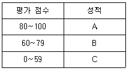
- 59
- 80
- 90
- 101
(정답률: 77%)
29. 반정규화(Denormalization) 유형중 중복 테이블을 추가하는 방법에 해당하지 않는 것은?
- 빌드 테이블의 추가
- 집계 테이블의 추가
- 진행 테이블의 추가
- 특정 부분만을 포함하는 테이블의 추가
(정답률: 47%)
30. ISO/IEC 9126의 소프트웨어 품질 특성 중 기능성(Functionlity)의 하위 특성으로 옳지 않은 것은?
- 학습성
- 적합성
- 정확성
- 보안성
(정답률: 61%)
31. 다음 트리의 차수(degree)와 단말 노드(terminal node)의 수는?
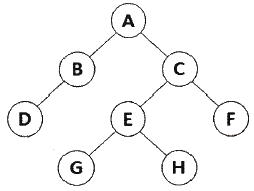
- 차수: 4, 단말 노드: 4
- 차수: 2, 단말 노드: 4
- 차수: 4, 단말 노드: 8
- 차수: 2, 단말 노드: 8
(정답률: 72%)
32. 디지털 저작권 관리(DRM)의 기술 요소가 아닌 것은?
- 크랙 방지 기술
- 정책 관리 기술
- 암호화 기술
- 방화벽 기술
(정답률: 77%)
33. 소프트 웨어 테스트에서 오류의 80%는 전체 모듈의 20% 내에서 발견된다는 법칙은?
- Brooks의 법칙
- Boehm의 법칙
- Pareto의 법칙
- Jackson의 법칙
(정답률: 75%)
34. 소프트웨어 형상 관리의 의미로 적절한 것은?
- 비용에 관한 사항을 효율적으로 관리하는 것
- 개발 과정의 변경 사항을 관리하는 것
- 테스트 과정에서 소프트웨어를 통합하는 것
- 개발 인력을 관리하는 것
(정답률: 69%)
35. 알고리즘 시간복잡도 O(1)이 의미하는 것은?
- 컴퓨터 처리가 불가
- 알고리즘 입력 데이터 수가 한 개
- 알고리즘 수행시간이 입력 데이터 수와 관계없이 일정
- 알고리즘 길이가 입력 데이터보다 작음
(정답률: 76%)
36. 소스코드 품질분석 도구 중 정적분석 도구가 아닌 것은?
- pmd
- cppcheck
- valMeter
- checkstyle
(정답률: 66%)
37. 검증 검사 기법 중 개발자의 장소에서 사용자가 개발자 앞에서 행하는 기법이며, 일반적으로 통제된 환경에서 사용자와 개발자가 함께 확인하면서 수행되는 검사는?
- 동치 분할 검사
- 형상 검사
- 알파 검사
- 베타 검사
(정답률: 79%)
38. 하향식 통합에 있어서 모듈 간의 통합 시험을 위해 일시적으로 필요한 조건만을 가지고 임시로 제공되는 시험용 모듈을 무엇이라고 하는가?
- Stub
- Driver
- Procedure
- Function
(정답률: 82%)
39. SW 패키징 도구 활용 시 고려 사항과 거리가 먼 것은?
- 패키징 시 사용자에게 배포되는 SW이므로 보안을 고려한다.
- 사용자 편의성을 위한 복합성 및 비효율성 문제를 고려한다.
- 보안상 단일 기종에서만 사용할 수 있도록 해야 한다.
- 제품 SW 종류에 적합한 암호화 알고리즘을 적용한다.
(정답률: 89%)
40. 외계인코드(Alien Code)에 대한 설명으로 옳은 것은?
- 프로그램의 로직이 복잡하여 이해하기 어려운 프로그램을 의미한다.
- 아주 오래되거나 참고문서 또는 개발자가 없어 유지보수 작업이 어려운 프로그램을 의미한다.
- 오류가 없어 디버깅 과정이 필요 없는 프로그램을 의미한다.
- 사용자가 직접 작성한 프로그램을 의미한다.
(정답률: 82%)
3과목: 데이터베이스 구축
41. SQL 의 분류 중 DDL에 해당하지 않는 것은?
- UPDATE
- ALTER
- DROP
- CREATE
(정답률: 74%)
42. 다음 두 릴레이션에서 외래키로 사용된 것은? (단 밑줄 친 속성은 기본키이다.)
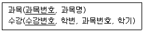
- 수강번호
- 과목번호
- 학번
- 과목명
(정답률: 86%)
43. 데이터 무결성 제약조건 중 “개체 무결성 제약”조건에 대한 설명으로 맞는 것은?
- 릴레이션 내의 튜플들이 각 속성의 도메인에 지정된 값만을 가져야 한다.
- 기본키에 속해 있는 애트리뷰트는 널값이나 중복값을 가질 수 없다.
- 릴레이션은 참조할 수 없는 외래키 값을 가질 수 없다.
- 외래키 값은 참조 릴레이션의 기본키 값과 동일해야 한다.
(정답률: 76%)
44. 뷰(view)에 대한 설명으로 옳지 않은 것은?
- 뷰는 CREATE 문을 사용하여 정의한다.
- 뷰는 데이터의 논리적 독립성을 제공한다.
- 뷰를 제거할 때에는 DROP 문을 사용한다.
- 뷰는 저장장치 내에 물리적으로 존재한다.
(정답률: 76%)
45. 다음 SQL 문의 실행 결과는?
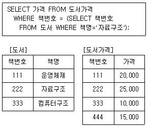
- 10,000
- 15,000
- 20,000
- 25,000
(정답률: 89%)
46. 데이터베이스의 논리적 설계(logical design) 단계에서 수행하는 작업이 아닌 것은?
- 레코드 집중의 분석 및 설계
- 논리적 데이터베이스 구조로 매핑(mapping)
- 트랜잭션 인터페이스 설계
- 스키마의 평가 및 정제
(정답률: 45%)
47. 이행적 함수 종속 관계를 의미하는 것은?
- A→B이고 B→C 일 때, A→C를 만족하는 관계
- A→B이고 B→C 일 때, C→A를 만족하는 관계
- A→B이고 B→C 일 때, B→A를 만족하는 관계
- A→B이고 B→C 일 때, C→B를 만족하는 관계
(정답률: 85%)
48. 하나의 애트리뷰트가 가질 수 있는 원자값들의 집합을 의미하는 것은?
- 도메인
- 튜플
- 엔티티
- 다형성
(정답률: 66%)
49. STUDENT 테이블에 독일어과 학생 50명, 중국어과 학생 30명, 영어영문학과 학생 50명의 정보가 저장되어 있을 때, 다음 두 SQL문의 실행 결과 튜플 수는? (단, DEPT 컬럼은 학과명)
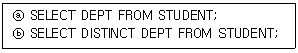
- ⓐ 3, ⓑ 3
- ⓐ 50, ⓑ 3
- ⓐ 130, ⓑ 3
- ⓐ 130, ⓑ 130
(정답률: 82%)
50. 관계대수 연산에서 두 릴레이션이 공통으로 가지고 있는 속성을 이용하여 두 개의 릴레이션을 하나로 합쳐서 새로운 릴레이션을 만드는 연산은?
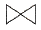
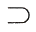
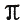
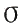
(정답률: 82%)
51. 트랜잭션의 특성 중 다음 설명에 해당하는 것은?
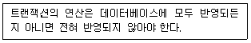
- Durability
- Share
- Consistency
- Atomicity
(정답률: 73%)
52. 분산 데이터베이스 목표 중 “데이터베이스의 분산된 물리적 환경에서 특정 지역의 컴퓨터 시스템이나 네트워크에 장애가 발생해도 데이터 무결성이 보장된다”는 것과 관계있는 것은?
- 장애 투명성
- 병행 투명성
- 위치 투명성
- 중복 투명성
(정답률: 71%)
53. 데이터베이스 시스템에서 삽입, 갱신, 삭제 등의 이벤트가 발생할 때마다 관련 작업이 자동으로 수행되는 절차형 SQL은?
- 트리거(trigger)
- 무결성(integrity)
- 잠금(lock)
- 복귀(rollback)
(정답률: 82%)
54. 참조 무결성을 유지하기 위하여 DROP문에서 부모 테이블의 항목 값을 삭제할 경우 자동적으로 자식 테이블의 해당 레코드를 삭제하기 위한 옵션은?
- CLUSTER
- CASCADE
- SET-NULL
- RESTRICTED
(정답률: 77%)
55. DML에 해당하는 SQL 명령으로만 나열된 것은?
- DELETE, UPDATE, CREATE, ALTER
- INSERT, DELETE, UPDATE, DROP
- SELECT, INSERT, DELETE, UPDATE
- SELECT, INSERT, DELETE, ALTER
(정답률: 81%)
56. 데이터 제어언어(DCL)의 기능으로 옳지 않은 것은?
- 데이터 보안
- 논리적, 물리적 데이터 구조 정의
- 무결성 유지
- 병행수행 제어
(정답률: 67%)
57. 병행제어의 로킹(Locking) 단위에 대한 설명으로 옳지 않은 것은?
- 데이터베이스, 파일, 레코드 등은 로킹 단위가 될 수 있다.
- 로킹 단위가 작아지면 로킹 오버헤드가 감소한다.
- 로킹 단위가 작아지면 데이터베이스 공유도가 증가한다.
- 한꺼번에 로킹 할 수 있는 객체의 크기를 로킹 단위라고 한다.
(정답률: 77%)
58. E-R 모델의 표현 방법으로 옳지 않은 것은?
- 개체타입: 사각형
- 관계타입: 마름모
- 속성: 오각형
- 연결: 선
(정답률: 87%)
59. 다음 설명의 ( )안에 들어갈 내용으로 적합한 것은?
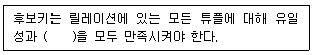
- 중복성
- 최소성
- 참조성
- 동일성
(정답률: 78%)
60. 정규화 과정 중 1NF에서 2NF가 되기 위한 조건은?
- 1NF를 만족하는 모든 도메인이 원자 값이어야 한다.
- 1NF를 만족하고 키가 아닌 모든 애트리뷰트들이 기본 키에 이행적으로 함수 종속되지 않아야 한다.
- 1NF를 만족하고 다치 종속이 제거되어야 한다.
- 1NF를 만족하고 키가 아닌 모든 속성이 기본키에 대하여 완전 함수적 종속 관계를 만족해야 한다.
(정답률: 57%)
4과목: 프로그래밍 언어 활용
61. IPv6에 대한 설명으로 틀린 것은?
- 128비트의 주소 공간을 제공한다.
- 인증 및 보안 기능을 포함하고 있다.
- 패킷 크기가 64Kbyte로 고정되어 있다.
- IPv6 확장 헤더를 통해 네트워크 기능 확장이 용이하다.
(정답률: 80%)
62. C언어에서 비트 논리연산자에 해당하지 않는 것은?
- ^
- ?
- &
- ~
(정답률: 69%)
63. TCP/IP 프로토콜 중 전송계층 프로토콜은?
- HTTP
- SMTP
- FTP
- TCP
(정답률: 71%)
64. 시스템에서 모듈 사이의 결합도(Coupling)에 대한 설명으로 옳은 것은?
- 한 모듈 내에 있는 처리요소들 사이의 기능적인 연관 정도를 나타낸다.
- 결합도가 높으면 시스템 구현 및 유지보수 작업이 쉽다.
- 모듈간의 결합도를 약하게 하면 모듈 독립성이 향상된다.
- 자료결합도는 내용결합도 보다 결합도가 높다.
(정답률: 69%)
65. 은행가 알고리즘(Banker's Algorithm)은 교착상태의 해결 방법 중 어떤 기법에 해당하는가?
- Avoidance
- Detection
- Prevention
- Recovery
(정답률: 73%)
66. UNIX의 쉘(Shell)에 관한 설명으로 옳지 않은 것은?
- 명령어 해석기이다.
- 시스템과 사용자 간의 인터페이스를 담당한다.
- 여러 종류의 쉘이 있다.
- 프로세스, 기억장치, 입출력 관리를 수행한다.
(정답률: 67%)
67. 교착 상태 발생의 필요 충분 조건이 아닌 것은?
- 상호 배제(mutual exclusion)
- 점유와 대기(hold and wait)
- 환형 대기(circular wait)
- 선점(preemption)
(정답률: 67%)
68. OSI-7계층에서 종단간 신뢰성 있고 효율적인 데이터를 전송하기 위해 오류검출과 복구, 흐름 제어를 수행하는 계층은?
- 전송 계층
- 세션 계층
- 표현 계층
- 응용 계층
(정답률: 78%)
69. IPv6의 주소체계로 거리가 먼 것은?
- Unicast
- Anycast
- Broadcast
- Multicast
(정답률: 74%)
70. TCP/IP 네트워크에서 IP 주소를 MAC 주소로 변환하는 프로토콜은?
- UDP
- ARP
- TCP
- ICMP
(정답률: 71%)
71. 프로세스 상태의 종류가 아닌 것은?
- Ready
- Running
- Request
- Exit
(정답률: 67%)
72. 스레드(Thread)에 대한 설명으로 옳지 않은 것은?
- 한 개의 프로세스는 여러 개의 스레드를 가질 수 없다.
- 커널 스레드의 경우 운영체제에 의해 스레드를 운용한다.
- 사용자 스레드의 경우 사용자가 만든 라이브러리를 사용하여 스레드를 운용한다.
- 스레드를 사용함으로써 하드웨어, 운영체제의 성능과 응용 프로그램의 처리율을 향상시킬 수 있다.
(정답률: 79%)
73. HRN(Highest Response-ratio Next) 스케줄링 방식에 대한 설명으로 옳지 않은 것은?
- 대기 시간이 긴 프로세스의 경우 우선 순위가 높아진다.
- SJF 기법을 보완하기 위한 방식이다.
- 긴 작업과 짧은 작업 간의 지나친 불평등을 해소할 수 있다.
- 우선 순위를 계산하여 그 수치가 가장 낮은 것부터 높은 순으로 우선 순위가 부여된다.
(정답률: 70%)
74. IEEE 802.11 워킹 그룹의 무선 LAN 표준화 현황 중 QoS 강화를 위해 MAC 지원 가능을 채택한 것은?
- 802.11a
- 802.11b
- 802.11g
- 802.11e
(정답률: 61%)
75. C언어에서 사용할 수 없는 변수명은?
- student2019
- text-color
- _korea
- amount
(정답률: 70%)
76. 스크립트 언어가 아닌 것은?
- PHP
- Cobol
- Basic
- Python
(정답률: 61%)
77. 다음의 페이지 참조 열(Page reference string)에 대해 페이지 교체 기법으로 선입선출 알고리즘을 사용할 경우 페이지 부재(Page Fault) 횟수는? (단, 할당된 페이지 프레임 수는 3이고, 처음에는 모든 프레임이 비어 있다.)
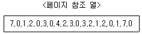
- 13
- 14
- 15
- 20
(정답률: 56%)
78. C언어에서 배열 b[5]의 값은?
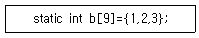
- 0
- 1
- 2
- 3
(정답률: 73%)
79. 응집도가 가장 낮은 것은?
- 기능적 응집도
- 시간적 응집도
- 절차적 응집도
- 우연적 응집도
(정답률: 80%)
80. JAVA 언어에서 접근제한자가 아닌 것은?
- public
- protected
- package
- private
(정답률: 75%)
5과목: 정보시스템 구축관리
81. Rayleigh-Norden 곡선의 노력 분포도를 이용한 프로젝트 비용 산정기법은?
- Putnam 모형
- 델파이 모형
- COCOMO 모형
- 기능점수 모형
(정답률: 57%)
82. 메모리상에서 프로그램의 복귀 주소와 변수사이에 특정 값을 저장해 두었다가 그 값이 변경되었을 경우 오버플로우 상태로 가정하여 프로그램 실행을 중단하는 기술은?
- 모드체크
- 리커버리 통제
- 시스로그
- 스택가드
(정답률: 76%)
83. 백도어 탐지 방법으로 틀린 것은?
- 무결성 검사
- 닫힌 포트 확인
- 로그 분석
- SetUID 파일 검사
(정답률: 71%)
84. IP 또는 ICMP의 특성을 악용하여 특정 사이트에 집중적으로 데이터를 보내 네트워크 또는 시스템의 상태를 불능으로 만드는 공격 방법은?
- TearDrop
- Smishing
- Qshing
- Smurfing
(정답률: 67%)
85. CMM(Capability Maturity Model) 모델의 레벨로 옳지 않은 것은?
- 최적단계
- 관리단계
- 정의단계
- 계획단계
(정답률: 52%)
86. 웹과 컴퓨터 프로그램에서 용량이 적은 데이터를 교환하기 위해 데이터 객체를 속성·값의 쌍 형태로 표현하는 형식으로 자바스크립트(JavaScript)를 토대로 개발되어진 형식은?
- Python
- XML
- JSON
- WEB SEVER
(정답률: 79%)
87. 크래커가 침입하여 백도어를 만들어 놓거나, 설정 파일을 변경했을 때 분석하는 도구는?
- trace
- tripwire
- udpdump
- cron
(정답률: 73%)
88. 소프트웨어 개발 프레임워크를 적용할 경우 기대효과로 거리가 먼 것은?
- 품질보증
- 시스템 복잡도 증가
- 개발 용이성
- 변경 용이성
(정답률: 87%)
89. COCOMO model 중 기관 내부에서 개발된 중소 규모의 소프트웨어로 일괄 자료 처리나 과학기술 계산용, 비즈니스 자료 처리용으로 5만 라인 이하의 소프트웨어를 개발하는 유형은?
- embeded
- organic
- semi-detached
- semi-embeded
(정답률: 71%)
90. 여러 개의 독립된 통신장치가 UWB(Ultra Wideband)기술 또는 블루투스 기술을 사용하여 통신망을 형성하는 무선 네트워크 기술은?
- PICONET
- SCRUM
- NFC
- WI-SUN
(정답률: 55%)
91. 프로토타입을 지속적으로 발전시켜 최종 소프트웨어 개발까지 이르는 개발방법으로 위험관리가 중심인 소프트웨어 생명주기 모형은?
- 나선형 모형
- 델파이 모형
- 폭포수 모형
- 기능점수 모형
(정답률: 74%)
92. 다음이 설명하는 용어로 옳은 것은?
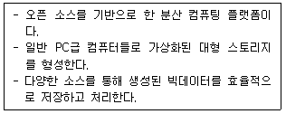
- 하둡(Hadoop)
- 비컨(Beacon)
- 포스퀘어(Foursquare)
- 맴리스터(Memristor)
(정답률: 76%)
93. 소인수 분해 문제를 이용한 공개키 암호화 기법에 널리 사용되는 암호 알고리즘 기법은?
- RSA
- ECC
- PKI
- PEM
(정답률: 79%)
94. LOC 기법에 의하여 예측된 총 라인수가 50000라인, 프로그래머의 월 평균 생산성이 200라인, 개발에 참여할 프로그래머가 10인 일 때, 개발 소요 기간은?
- 25개월
- 50개월
- 200개월
- 2000개월
(정답률: 86%)
95. 최대 홉수를 15로 제한한 라우팅 프로토콜은?
- RIP
- OSPF
- Static
- EIGRP
(정답률: 72%)
96. 컴퓨터 사용자의 키보드 움직임을 탐지해 ID, 패스워드 등 개인의 중요한 정보를 몰래 빼가는 해킹 공격은?
- Key Logger Attack
- Worm
- Rollback
- Zombie Worm
(정답률: 87%)
97. 테일러링(Tailoring) 개발 방법론의 내부 기준에 해당하지 않는 것은?
- 납기/비용
- 기술환경
- 구성원 능력
- 국제표준 품질기준
(정답률: 60%)
98. 폭포수 모형의 특징으로 거리가 먼 것은
- 개발 중 발생한 요구사항을 쉽게 반영할 수 있다.
- 순차적인 접근방법을 이용한다.
- 단계적 정의와 산출물이 명확하다.
- 모형의 적용 경험과 성공사례가 많다.
(정답률: 84%)
99. 다음 설명의 정보보안 침해 공격 관련 용어는?
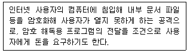
- Smishing
- C-brain
- Trojan Horse
- Ransomware
(정답률: 83%)
100. 시스템 내의 정보는 오직 인가된 사용자만 수정할 수 있는 보안 요소는?
- 기밀성
- 부인방지
- 가용성
- 무결성
(정답률: 45%)